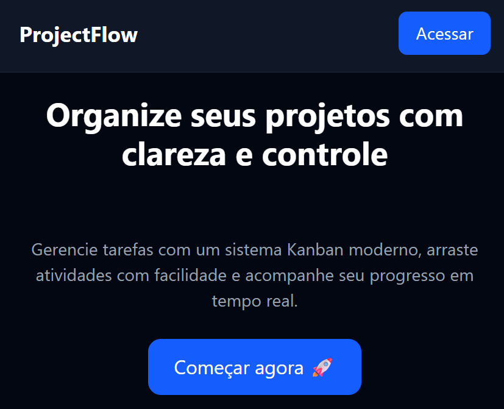

ProjectFlow
Aplicação de gerenciamento de tarefas no estilo Kanban, desenvolvida com React e Vite.
React
Vite
Zustand
JavaScript
OLÁ, EU SOU YGOR NUNES
Formado em Análise e Desenvolvimento de Sistemas, desenvolvo projetos envolvendo aplicações web, APIs, bancos de dados e soluções de software.
CONHEÇA UM POUCO
Sou formado em Análise e Desenvolvimento de Sistemas e direciono minha carreira ao desenvolvimento Full Stack. Tenho interesse na construção de aplicações web, desenvolvimento de APIs, integração com bancos de dados e soluções que resolvam problemas reais.
Venho desenvolvendo projetos práticos para aprofundar meus conhecimentos em tecnologias como Java, Spring Boot, Python e PostgreSQL, buscando aprimorar continuamente minhas habilidades em arquitetura, desenvolvimento e qualidade de software.
Estou em busca de oportunidades para contribuir com projetos, colaborar com equipes e continuar evoluindo como desenvolvedor.
Confira alguns dos meus projetos mais recentes.

Aplicação de gerenciamento de tarefas no estilo Kanban, desenvolvida com React e Vite.
Descrição do projeto e das tecnologias utilizadas.
Descrição do projeto e das tecnologias utilizadas.
Estou aberto a oportunidades profissionais, projetos e colaborações. Entre em contato comigo.